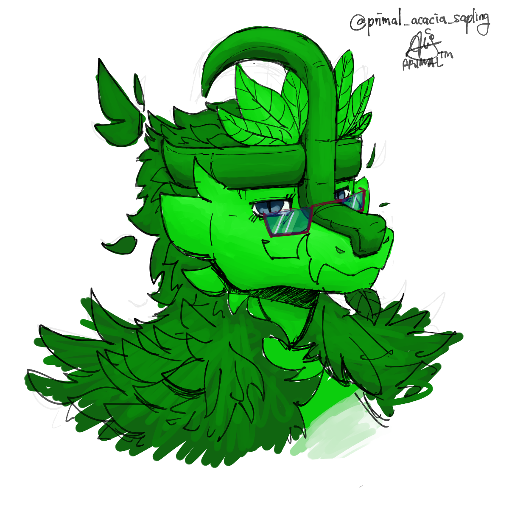

UPDATE >> I am now taking a Bachelor In Environmental Tech. Art should be as usual.
Welcome to my website!
I am PrimalPeashoter, or Primal for short. Nice to meet you!
This is my first website, so no fancy CSS or JavaScript (yet!). Just plain HTML like 1999.

My sona
Biodata
I'm an 05' teen, and I don't mind any pronouns. I was born Malaysian, and I'm currently in my first sem of degree in UiTM. I'm taking Environmental Technology with Honours.
My goals in the future is to delve into renewable energy engineering, water management or ecology/environmental sciences to help out with my village. I also intend to have art as my second thing, more than a hobby.
My Myers-Briggs code is ENTP, and I've been diagnosed with both Autism and Attention Deficit Disorder. Doesn't stop me from pushing on!
I'm pretty lax about many things and chill to hang out with. I tend to go into pretty deep philosophical/science talk though if prompted. I try to keep things casual. People have commented that I am quite an optimistic person and I don't back out easily from a goal no matter how arduous.
I have a lover, and her name is Dania! She goes by Kaleidosium on some platforms.
Other than art, I love reading books, gaming, cycling, and hiking. Right now, I'm mostly engrossed in Genshin Impact.
My Art
My art is mostly digital art aimed towards members of the Furry Fandom. This means that you won't see a lot of humans in my art, mostly anthropomorphic characters. I still do draw humans though, to balance it out.
I used to draw using an old Trust tablet I got from my friend, @Skitfox18 from Romania. I've since sent it over to my girlfriend in exchange for a newer Wacom Intuous. It's defo an improvement. My preferred drawing program is FireAlpaca and I draw on a Dell Inspiron laptop.
Here are some examples of my work: (pending - add images)
My Social Media Accounts:
Twitter (inactive)
DeviantArt (inactive)
Instagram (inactive)
Furaffinity (inactive)
Reddit (inactive)
YouTube (hiatus)
GitHub (inactive)
ArtFight (Active every July)
Tumblr (Main art gallery)
BlueSky (active)
Copyright PrimalPeashoter 2018-2025
hi dania ∑;3c